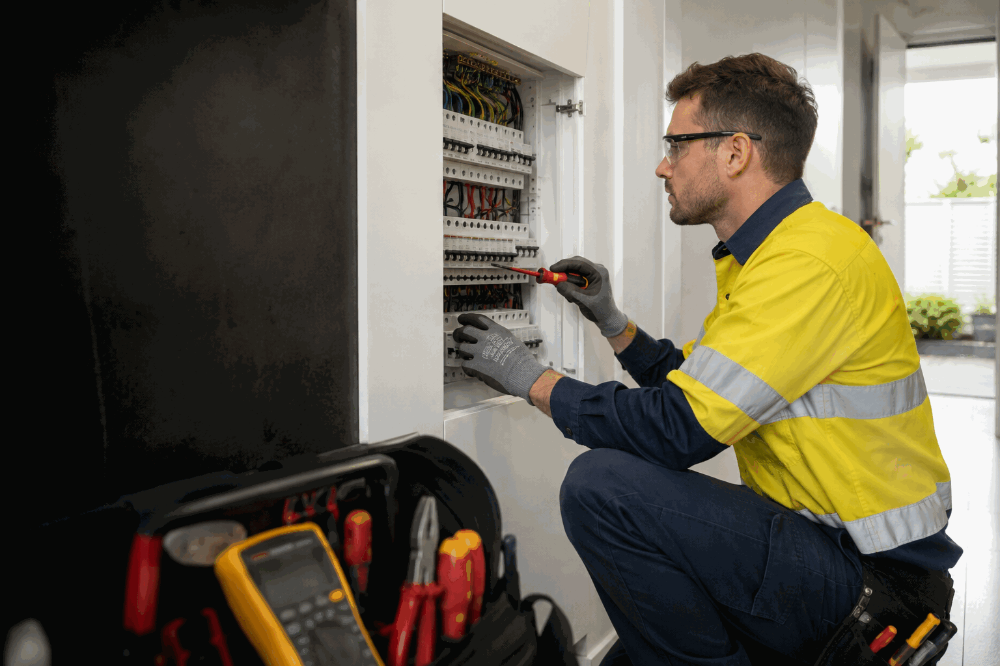

Affected area
Note which rooms, lights, outlets or appliances are affected, without testing damaged equipment or dismantling anything.
Describe the symptom rather than trying to dismantle or diagnose electrical equipment yourself. Include what stopped working and whether a safety switch operated.
Call 0413 477 667Do not repeatedly reset a device that trips again. Note which areas lost power and what was in use at the time.
Report cracked, loose, discoloured, unusually warm or non-working accessories. Stop using anything that is damaged, sparking, buzzing or smells burnt.
Explain whether one light or several are affected and whether the issue changes when another device is used.
Provide available history, including previous symptoms, recent water ingress or work elsewhere in the building.

Property managers can send a work order with the occupant’s description, affected area, access contact and approval pathway. Identify any strata-controlled areas where relevant.
Electrical faults are best described by what is happening: a safety switch that will not stay on, lighting that has stopped working, an outlet that feels loose, or power loss in a particular area. Do not open switchboards, remove covers or test fixed wiring.
For smoke, fire, active arcing, fallen lines or electrical equipment in contact with water, move clear and call 000. For a wider network outage or hazard, follow the advice of the relevant utility.

Note which rooms, lights, outlets or appliances are affected, without testing damaged equipment or dismantling anything.
Record the time, what was in use, and whether rain, cleaning or water ingress preceded the change.
Report heat, burning smell, cracking, buzzing, discolouration, smoke or water nearby from a safe distance.
Electrical equipment should not be dismantled or tested by the occupant. Tell us what changed and whether there are visible warning signs.
Ellis Price Guide
Ellis Price Guide ranges for common standard-hours, standard-scope electrical work.
AUD $220–$440
per attendance · incl. GST
AUD $220–$440
per attendance · incl. GST
AUD $220–$330
per device · incl. GST
AUD $165–$275
per point · incl. GST
AUD $70–$160
per light · incl. GST
AUD $205–$275
per alarm · incl. GST
Guide conditions: These AUD ranges are for standard-hours, standard-scope work and are incl. GST. Access, materials, extra pipe, cable or circuit work, compliance work, emergency or after-hours work and unforeseen repairs are confirmed in a written quote before work proceeds.
Loss of power in part of a property, recurring trips or an affected circuit. Note what was in use before the change.
Discuss a power fault →A switch that will not remain on needs attention. Avoid repeatedly resetting it and record the affected areas.
Read the safety-switch guide →One light or several lights not working, flickering or changing behaviour when another device is used.
Discuss lighting →Loose, cracked, discoloured, warm or non-working accessories should be reported without further use or investigation.
Discuss an outlet →Repeated beeping, a fault indication or an alarm issue at a managed property can be described in the enquiry.
Discuss a smoke alarm →Share access notes, tenant information, the work-order reference and any prior symptoms or water-ingress details.
Property-management details →Say what stopped working, where it is located and what changed first. Avoid diagnosing, opening covers or testing equipment.
Report smoke, burning smell, heat, arcing, visible damage or water near electrical equipment from a safe position.
For rental, strata and commercial properties, include the access contact and approval pathway with the request.